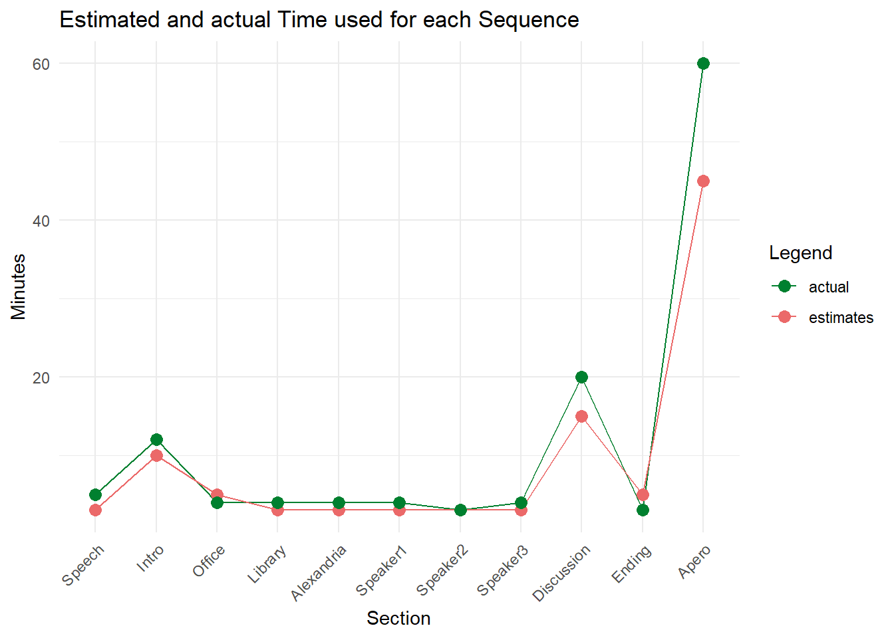
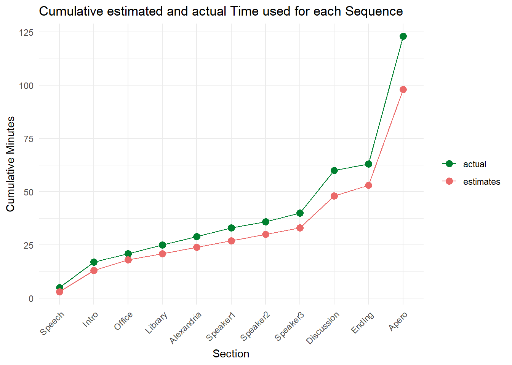
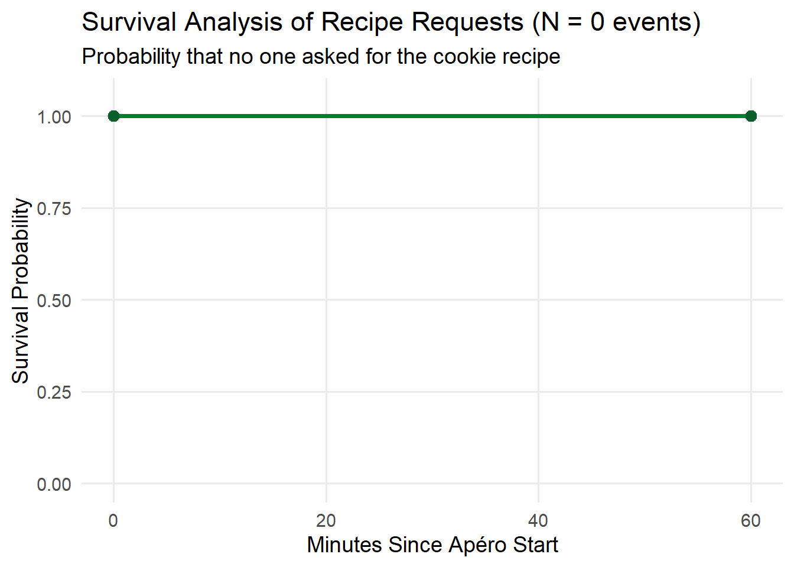
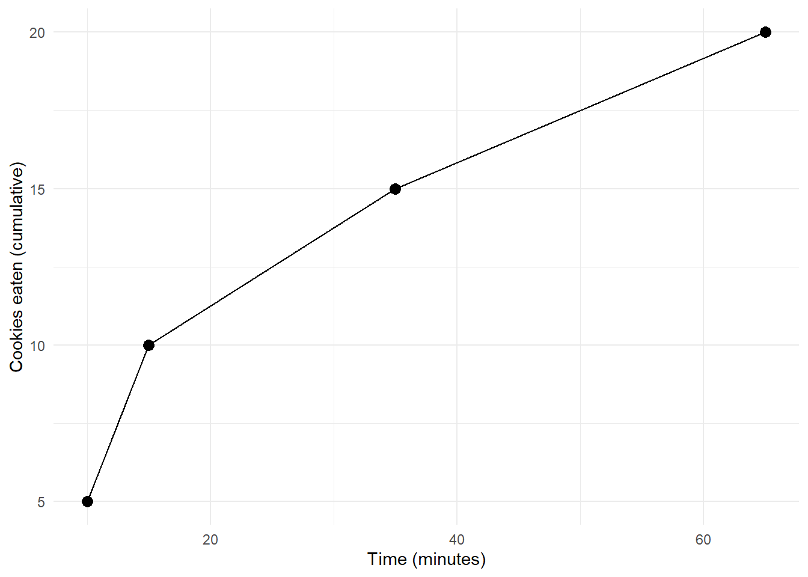
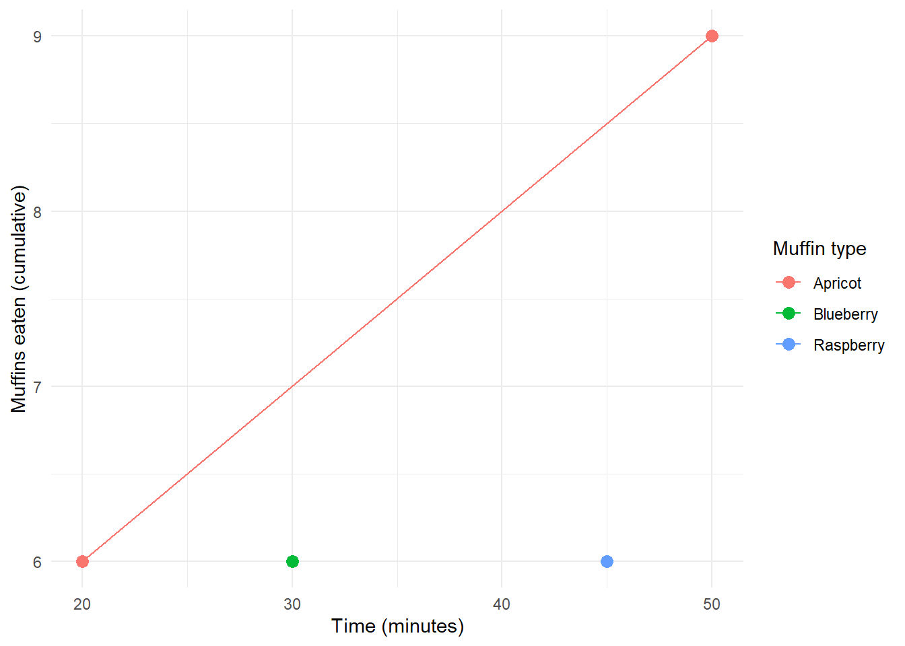

Analysis and Executive Summary
The Open Science Office Kick-off was a success overall. Around 25 participants attended in person and 4 online, with only a small no-show rate. The main event finished almost exactly on time (~65 minutes), and the apéro extended to about an hour suggesting strong informal engagement. Formal interaction, however, is modest so far, with only two audience questions and no follow-up feedback so far.
The open science muffin and cookie showdown hypotheses revealed mixed results. No one asked for the cookie recipe (H1 rejected, flat survival curve confirmed). Muffins were consumed proportionally faster than cookies (H2 rejected). Blueberry muffins were eaten faster than apricot muffins, providing partial support for H3. One person scanned the QR code (H4 confirmed).
The main event was an overall success with 4 participants online and approximately 25 participants in person. While slightly more people had registered for the event (6 online, 30 in person), the no-show rate was low. Almost all guests stayed for the apéro and enjoyed some coffee and cake. Nonetheless, the IBT enjoyed some leftovers after the event.
While on-site engagement was high, and the fast-paced event seemed to be received well, the feedback and response was very low, with only two questions from the public and (1 day after the event) no feedback on the event so far. Therefore, especially the feedback part will also be re-stated in our follow-up communication.
One big worry that concerned us before the event was the timing. Surprisingly, none of our speakers used up substantially more time than expected, and the main event concluded after ~65 minutes. People were very engaged in discussions at the Apéro which lasted for about an hour, so longer than the anticipated 30-45 minutes.


The following hypotheses were preregistered prior to the Open Science Office Kickoff and are evaluated in accordance with the predefined decision rules outlined in the study protocol. The preregistration can be found on OSF.
At least one person will ask for the recipe for the cookies.

In line with the preregistered decision rule, H1 would be accepted if the number of people asking for the cookie recipe was strictly greater than zero. Across the full duration of the apéro (approximately 60 minutes), the observed number of recipe requests was zero. Consequently, H1 is rejected. A Kaplan-Meyer survival curve further corroborates this conclusion indicating that the probability of not being asked for the cookie recipe remains at 1 across the entire duration of the event, indicating that noone asked for the cookie recipe.
The cookies will be gone before the muffins.
According to the preregistered decision rule, H2 would be accepted if the time \(t\) at which the number of cookies reached zero was strictly smaller than the time \(t\) at which the number of muffins reached zero.
This condition was not met. Neither stimulus category was fully depleted by the end of the apéro. At the final observation (65 minutes), 22 of 40 cookies had been eaten (18 remaining), whereas 27 of 36 muffins had been eaten (9 remaining: 5 raspberry, 2 apricot, 2 blueberry).
When accounting for different initial quantities, \(\frac{17}{40} = 0.425\) cookies remained, and \(\frac{9}{36} = 0.25\) muffins remained, therefore rejecting hypothesis 2 both in absolute quantities as well as in relative quantities.

The blueberry muffins and/or the raspberry muffins will be eaten faster than the apricot muffins.
According to the preregistered criterion, H3 is accepted if the time t at which either the raspberry or blueberry muffins reach zero is strictly smaller than the time t at which the apricot muffins reach zero.
In the observed data, none of the muffin types were fully depleted during the apéro. However, relative consumption speed differed descriptively across flavors. Blueberry muffins reached higher cumulative consumption levels earlier than apricot muffins. In particular, the ninth apricot muffin was only consumed after approximately 65 minutes, whereas blueberry muffins showed consistently earlier uptake across intermediate thresholds. Raspberry muffins exhibited slower early acceleration and were not fully depleted either. At the end of the observation window, two blueberry and two apricot muffins remained.
Because the preregistered decision rule required full depletion for strict acceptance, the hypothesis cannot be fully accepted. However, descriptively, the consumption trajectories provide partial support: blueberry muffins were consumed at a faster rate than apricot muffins across much of the observation period.
After pre-registering and analyzing the hypothesis, it became clear that it does not strictly follow the criteria for a well-worded hypothesis, as the wording of “blueberry and/or raspberry” permits for several interpretations. Therefore, the hypothesis was re-tested under the alternative wording
The muffins having a visible berry topping (blueberry, raspberry) will be eaten faster than the plain-looking muffins (apricot muffins).
Under these alternative presumptions, at \(t_{65}\), \(n_\text{with berries} = \frac{7}{24} = 0.29\) and \(n_\text{without berries} = \frac{2}{12} = 0.16\), rejecting hypothesis 3.

At least one person will scan the QR code explaining the badges.
Hypothesis 4 was confirmed. Exactly one person scanned the QR code about 20 minutes into the apéro.
As of right now, no e-mails have reached us yet, which was expected.
Directly after the kick-off, 7 people visited the website, of which 2 people had IP addresses from Germany (presumably David and someone else). The day after the kick-off (25th of February), a total of 16 visitors had been recorded on the website.